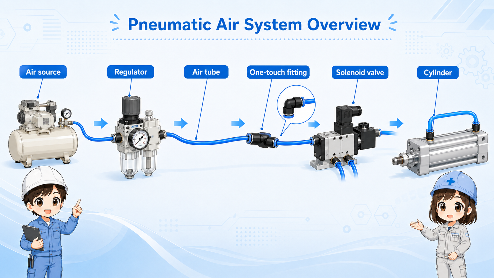
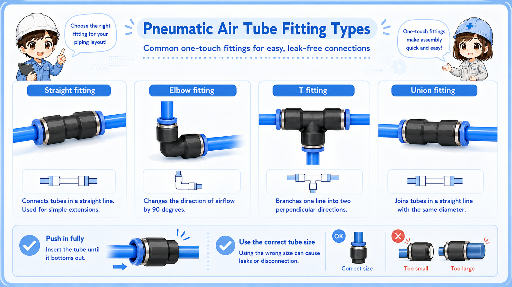
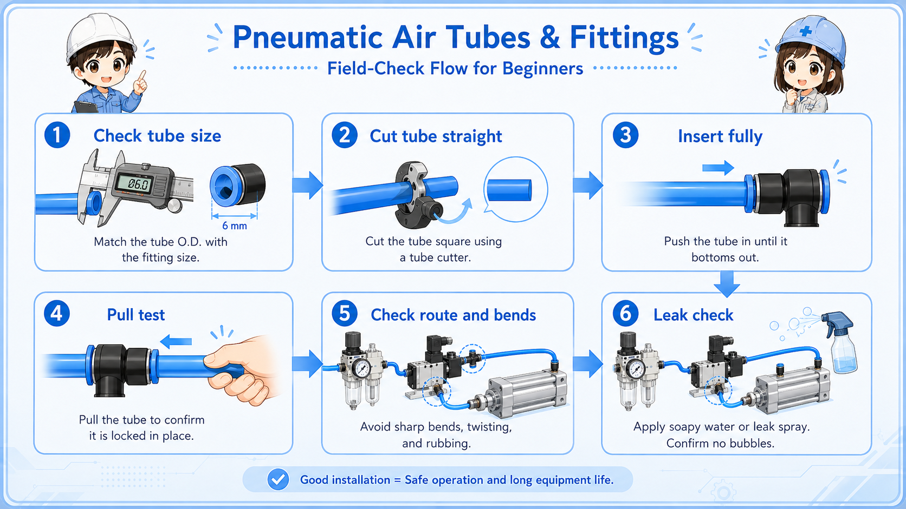

What are air tubes and fittings?
Air tubes and fittings form the basic piping path that sends compressed air to pneumatic equipment.
In a pneumatic system, compressed air does not reach a cylinder or valve by itself. It travels through air tubes, often called pneumatic tubing, and the tubes are connected to devices by fittings. Depending on the context, these fittings may be called air fittings, push-in fittings, or one-touch fittings. Always check the tube marking, fitting marking, manufacturer manual, and machine drawing for compatible size, material, and pressure rating.
For beginners, it is helpful to think of the tube as the air path and the fitting as the connection point. If either one is damaged, loose, bent, or mismatched, the machine can lose pressure or operate unreliably.

Small parts can cause big air problems
A tiny leak, a poorly cut tube end, or a tube that is not fully inserted can make the machine look like it has a pressure or valve problem.
How one-touch fittings are used
Many pneumatic machines use push-in, or one-touch, fittings. A tube is inserted into the fitting, and the internal mechanism holds it in place. This makes installation and replacement faster than threaded pipe work.
However, one-touch does not mean careless. The tube must be cut cleanly, inserted fully to the internal stop, and matched to the correct fitting size. A slanted, scratched, crushed, or mismatched tube end can leak or pull out even when it looks inserted. Do not force a tube into a fitting if the size or specification is unclear.
1. Cut the tube
Use a clean, straight cut so the end seats properly.
2. Insert fully
Push the tube into the fitting until it reaches the internal stop.
3. Pull check
Gently confirm the tube is held and does not pull out.
4. Leak check
Check for air leakage after pressure is supplied.

Do not reuse a damaged tube end
If the tube end is scratched, crushed, angled, or deformed, cut it cleanly before reinserting it. A damaged end can cause leaks or poor holding.
Tube diameter, route, and bending
Air tubes are available in different outside diameters and materials. The correct choice depends on the machine, fitting, pressure, air consumption, environment, and manufacturer specification.
Even when the tube size is correct, the route matters. A tube that is bent too sharply, squeezed, rubbed, or pulled can restrict air flow or fail over time.
| Check point | What it means | Field note |
|---|---|---|
| Tube diameter | The tube must match the fitting and the required air flow. | Do not mix similar-looking sizes without checking markings. |
| Bending radius | Sharp bends can narrow the air path. | Route the tube with a smooth curve, not a kink. |
| Tube length | Longer or complex routes can affect response and pressure drop. | Keep routing practical and avoid unnecessary loops. |
| Tube condition | Scratches, crushing, or hardening can cause leaks or failure. | Replace damaged tubes instead of forcing reuse. |
Common problems: leaks, pull-out, and kinks
When pneumatic equipment behaves strangely, the cause is not always the valve or cylinder. Tubes and fittings are common places to check first.
Air leak
Air can leak from a fitting, damaged tube, loose connection, or poorly cut tube end.
Tube pull-out
A tube can pull out if it is not fully inserted, pulled by movement, or mismatched with the fitting.
Kinked tube
A sharp bend can reduce air flow and make equipment move weakly or slowly.
Wrong size
A tube may look close enough but still be the wrong diameter for the fitting.
Do not keep increasing pressure to hide a leak
If air is leaking or the tube is restricted, raising pressure may hide the symptom temporarily but does not solve the root cause.
Field checks before replacing a tube or fitting
Before replacing parts, check the surrounding condition. A fitting that looks bad may actually be pulled by poor tube routing, machine movement, or repeated stress.

- Confirm the tube size and fitting size match.
- Check whether the tube is fully inserted into the fitting.
- Look for scratches, crushing, hardening, or angled tube cuts.
- Check whether the tube is bent too sharply or pulled by motion.
- Listen and feel for air leakage around the fitting.
- Check the regulator and gauge if pressure seems unstable.
Good field habit
When you replace a tube, also check why the old tube failed. Replacing only the tube may not help if the route still pulls, rubs, or bends too tightly.
Common troubleshooting points
The table below summarizes typical symptoms and where to look first.
| Symptom | Possible check point | Practical note |
|---|---|---|
| Weak cylinder movement | Air leak, kinked tube, low regulator pressure, clogged path. | Check air flow while the machine is operating. |
| Hissing sound | Leak at fitting, damaged tube end, loose connection. | Do not ignore small leaks; they can become unstable later. |
| Tube comes out | Incomplete insertion, wrong size, repeated pulling force. | Check both the fitting and the route of the tube. |
| Repeated tube damage | Rubbing, sharp bend, heat, moving part, poor clamp position. | Changing the route may be more important than replacing the tube. |
A simple way to think about it

Air tubes and fittings are easy to overlook because they look simple. But in pneumatic systems, they are the actual path the air travels through.

So if air pressure looks weak, I should check the tube route, insertion, and leaks before blaming only the valve or cylinder.
Summary: tubes and fittings are basic but important
Air tubes carry compressed air, and fittings connect those tubes to pneumatic equipment. Problems such as leaks, wrong tube size, poor insertion, sharp bending, or damaged tube ends can cause unstable operation.
Before replacing a valve or raising pressure, check the tube and fitting condition. A small piping issue can look like a bigger equipment problem.